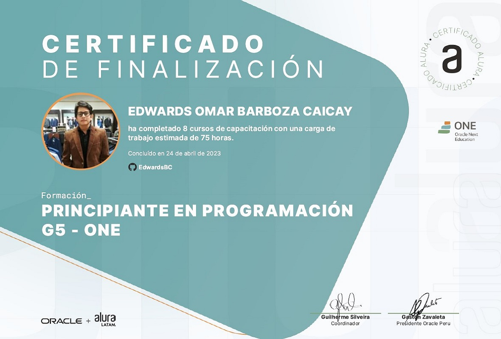
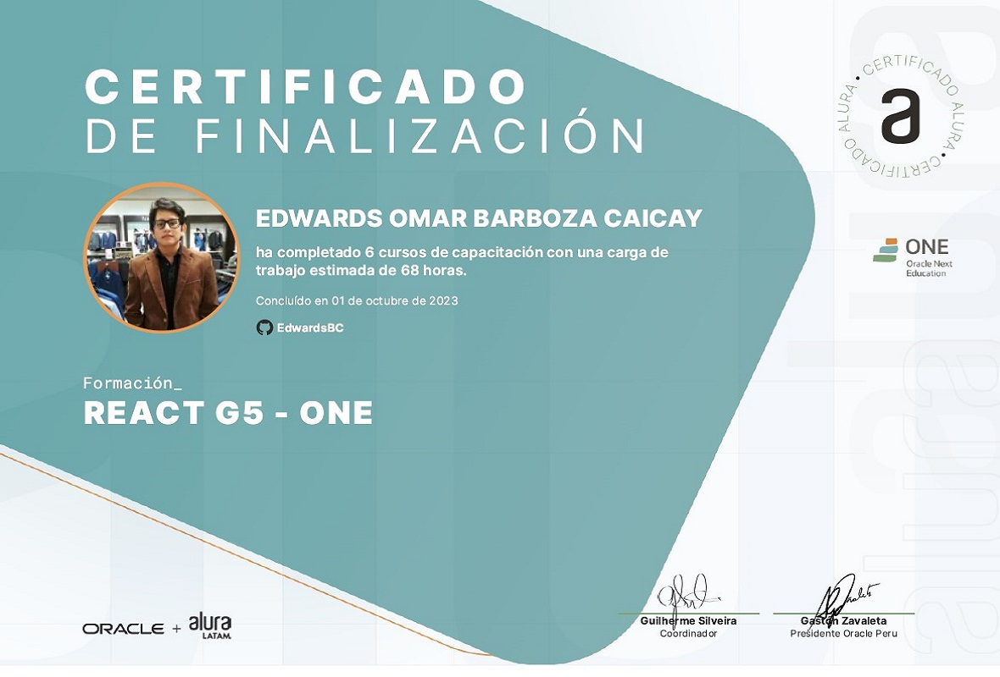
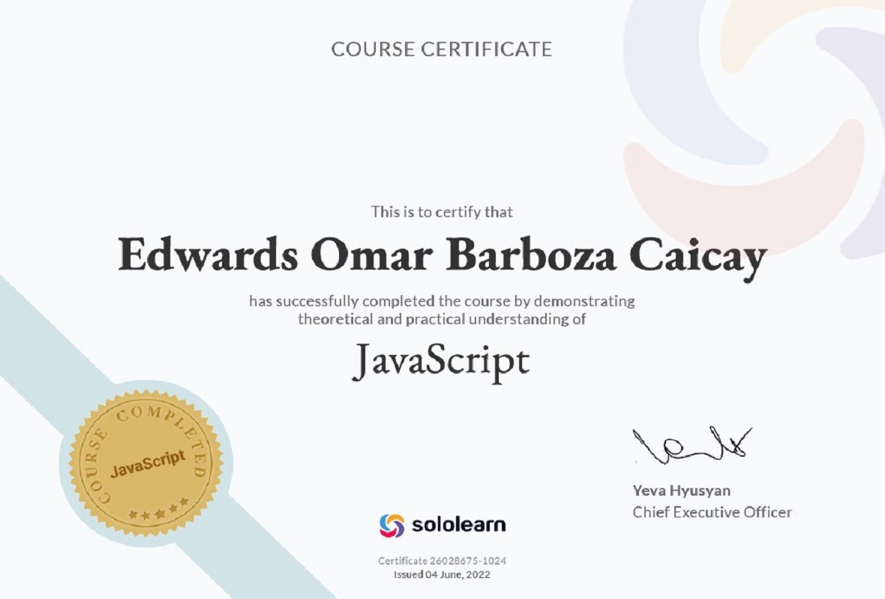

Certificados





Edwards Barboza - Especializado en Sistemas de Información e Inteligencia Artificial
Analista Funcional y Desarrollador Full Stack con más de 4 años de experiencia en la implementación y optimización de sistemas de gestión de usuarios, controles financieros, soluciones integradas con Inteligencia Artificial (LLMs) y generación de reportes finales, aplicando arquitecturas como MVC y Microservicios. Especializado en el uso de tecnologías como Python (FastAPI), React (TypeScript), Java, MySQL, SQL Server y soluciones cloud en AWS.
Cuento con experiencia liderando proyectos en todo su ciclo de vida: desde la coordinación directa con Product Owners y Key Users para el levantamiento de requerimientos, diseño de diagramas entidad-relación (ERD) y elaboración de documentación funcional (PRDs), hasta el desarrollo técnico y la automatización de procesos mediante motores de IA como Gemini y herramientas asistidas como Cursor y NotebookLM.
En mi rol como Analista Funcional en TASA (Gretalabs) y Full Stack Developer en GretaLabs, he dirigido iniciativas técnicas como el proyecto 'MAUI + AGENTE SUNAT', plataformas de inversión y sistemas de análisis de documentos ('Prisma'). Asimismo, como fundador de Golden Shulker Studios y en mis etapas en Afisca y SUTRAKOMAQ, he liderado desarrollos modulares, migraciones de bases de datos, integración de APIs empresariales (SUNAT, Power BI, SAP) y optimización de rendimiento en entornos de alta concurrencia.
Mis habilidades incluyen desarrollo de APIs RESTful, integración de LLMs para lectura de documentos, análisis de datos con Pandas, automatización de reportes (Excel y PDF), así como prototipado de interfaces en Figma/HTML/CSS y administración de instancias cloud (AWS EC2). Me apasiona mantenerme a la vanguardia de la tecnología y aplicar soluciones innovadoras a desafíos complejos de negocio.
Cuento con formación universitaria en Ingeniería de Sistemas e Informática (UTP - En curso), titulación técnica en Desarrollo de Sistemas de Información (IDAT), formación en Oracle Next Education, certificación de inglés B1 (SENATI) y metodologías ágiles (Scrum). Destaco por mi enfoque estructurado, pensamiento analítico y compromiso con la entrega de soluciones escalables que aporten valor real al negocio.
Además, mantengo una constante actividad en proyectos independientes y comunidades de desarrollo, complementando mi perfil técnico con capacidad de adaptación, creatividad y liderazgo técnico.
Formación universitaria enfocada en la ingeniería de software, arquitectura de sistemas de información, gestión de proyectos tecnológicos y optimización de procesos empresariales.
Creación de sistemas de información en Java, JS, Django y VisualBasic, así como en modelado de bases de datos en SQL Server, PHP, MySQL y Oracle. Participación en feria de proyectos Arduino y conocimientos de arquitectura MVC/MVT.
Certificación de nivel B1 en idioma inglés por SENATI, capacitando para la comunicación efectiva, lectura técnica de documentación de software y reuniones laborales internacionales.
Especialización en desarrollo Front-end y Back-end, lógica de programación avanzada, arquitectura de software y emprendimiento tecnológico.
Coordinación directa con Product Owners y Key Users para levantamiento de requerimientos y definición de alcance. Diseño de diagramas de clases y modelos entidad-relación (ERD). Elaboración de documentación funcional (PRDs), actas y guías de desarrollo. Automatización de resúmenes ejecutivos con IA (NotebookLM) y prototipado rápido. Liderazgo de avances bajo metodología Scrum.
Tech Stack: Scrum, ERD/UML, PRDs, SharePoint, NotebookLM, Cursor, HTML/CSS/JS, Microsoft Office.
Dirección técnica del proyecto "MAUI + AGENTE SUNAT" y plataformas de inversiones, integrando React (Vite/TSX) con FastAPI. Desarrollo de sistemas LLM y chat de contratos "Prisma" basado en Gemini. Diseño de BD en MySQL con Navicat, e integración de API SUNAT, Power BI, SAP, Google Maps API y AWS EC2.
Tech Stack: React (Vite/TSX), Python (FastAPI), Gemini LLM, MySQL, Navicat, API SUNAT, Power BI, SAP, Google Maps API, AWS EC2, JIRA, Bitbucket.
Migración de datos de MongoDB a MySQL optimizando consultas y costos. Diseño de prototipos en Figma y desarrollo de GUI con PySide6. Implementación de APIs RESTful con FastAPI y MySQL Connector/Python. Procesamiento de PDFs y análisis con Pandas. Generación asíncrona de reportes en Excel/PDF y control de versiones con Git/GitHub.
Tech Stack: PySide6, Figma, Python, FastAPI, MySQL, Pandas, PyPDF2, Regex, OpenPyXL, Git/GitHub, Visual Studio Code.
Desarrollo de un sistema administrativo con Python y PySide6, integrando formularios, tablas dinámicas y validaciones. Diseño y normalización de BD en MySQL/MariaDB con stored procedures y manejo transaccional vía SQLAlchemy. Integración con Excel y Pandas para carga y validación de datos. Implementación de reportes, control de asistencia y licencias.
Tech Stack: PySide6, Python 3, SQLAlchemy, MySQL/MariaDB, Pandas, Git/GitHub, VS Code.
Fundador y líder técnico de un estudio independiente, coordinando un equipo de 4 personas en desarrollo de servidores, páginas web y sistemas modulares. Implementación de plugins personalizados en Java, bots de Discord y arquitecturas de servidor para alta concurrencia. Gestión de control de versiones con Git y documentación técnica.
Tech Stack: Java (Spigot/Bukkit/Fabric), Python, HTML, CSS, JS, MySQL, Git/GitHub, Linux, Discord, VS Code.
Administración y soporte del ERP Defontana, gestión documental y capacitación. Desarrollo de aplicaciones en VBA para automatizar cotizaciones, notas de compra y reportes contables. Implementación de macros en Excel con validaciones y soluciones low-code.
Tech Stack: Excel+VBA, Visual Basic, ERP Defontana, Microsoft Office, Visual Studio 2019.


